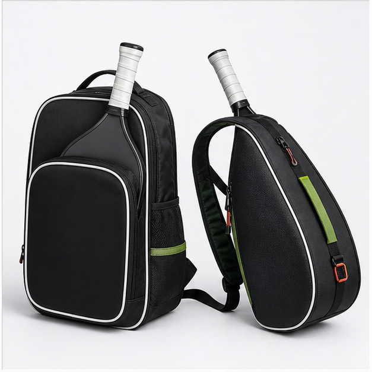
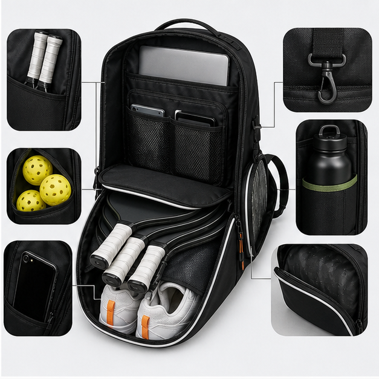
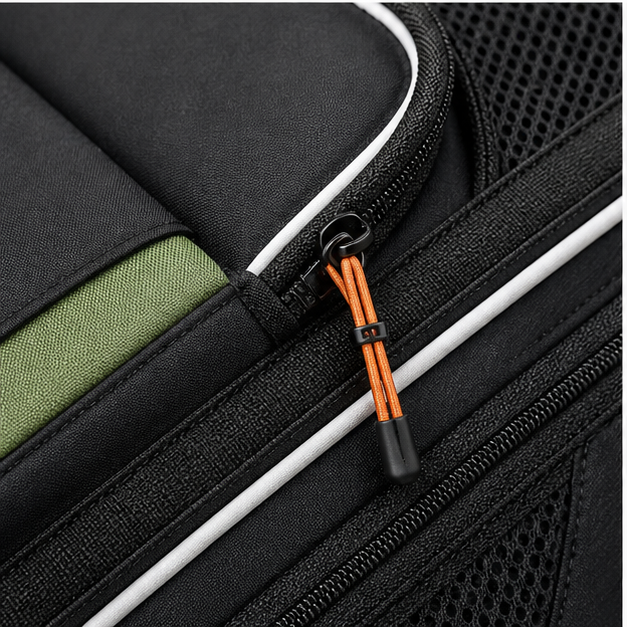
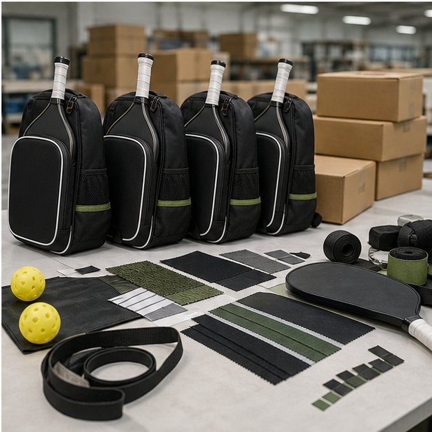

Why pickleball bags need their own design logic
Pickleball is growing quickly, but many pickleball bags on the market still feel like adapted tennis backpacks. That creates an opportunity for brand buyers who want a more focused product. A good pickleball bag protects paddles, organizes balls and accessories, hangs easily near a court, and stays compact enough for casual players. Cappuccino Bag develops custom pickleball bags for private-label brands, retailers, clubs and promotional programs that need a factory able to build practical bags rather than only change colors on a standard model.
The first decision is the user profile. A beginner may want a light sling bag with two paddles and balls. A league player may need a backpack with a shoe area, wet pocket, bottle pocket and personal storage. A tournament organizer may need a low-cost event bag with strong logo visibility and fast production. Each use case points to a different pattern, material mix and cost structure.
Useful pickleball bag formats
Sling bags are popular because they are simple, affordable and easy to wear. They work well for two paddles, a few balls and small personal items. Backpacks offer more storage and better weight balance, especially when players carry shoes, apparel, towel, bottle and phone. Tote-style pickleball bags can appeal to lifestyle retail, while compact paddle sleeves work well as add-on products or gift sets.
For brand buyers, the highest-value format is often a structured backpack that remains visually clean. A front paddle sleeve, main organizer compartment, side bottle pocket, hidden valuables pocket and fence hook can cover most real play needs without overbuilding the bag. For premium lines, padded paddle dividers, reflective piping, molded pullers and a more refined body shape help the product stand apart from low-cost marketplace options.
Pocket planning that customers notice
Pickleball paddles have different thicknesses and edge guards, so a sleeve that fits one paddle may feel tight for another. During sampling, we check sleeve opening width, padding thickness and zipper clearance. Ball pockets should be easy to reach but not so loose that balls fall out when the bag is placed sideways. Bottle pockets need elastic or adjustable retention because players carry bottles of many sizes.
Fence hooks are a small part that can become a strong selling point. The hook must be positioned so the bag hangs flat and does not dump contents forward. If the bag is too soft, the hook may pull the top panel out of shape. Reinforcement behind the hook keeps the structure cleaner and prevents tearing after repeated use.
Materials and branding for pickleball retail
Pickleball bag materials can range from lightweight polyester for promotional programs to matte coated fabric or nylon for retail lines. Air mesh is useful on back panels and straps, while neoprene-like panels can create a softer paddle-protection story. Reflective piping, color binding and custom zipper pullers can give a compact bag more shelf presence without adding large construction complexity.
Logo methods should match the retail tier. Screen printing works for event bags and entry lines. Embroidery, woven patches and rubber badges are better for mid-range and premium products. Heat transfer can be clean, but it should be tested on coated fabrics and curved panels. Private-label packaging can include hang tags, barcode labels, polybags, carton marks and insert cards when required by retailers.
How to avoid thin, generic product development
A thin pickleball bag brief says only 'make a paddle bag with logo.' A useful brief includes paddle quantity, player level, retail price target, preferred carry style, main materials, desired compartments, decoration method, packaging method and inspection expectations. Those details allow the factory to create a sample that has a real chance of becoming a product, instead of a nice-looking object that misses the customer use case.
Cappuccino Bag can help buyers compare standard body sizes, adjust pocket layouts, choose materials, and decide which features deserve budget. The goal is to make a bag that customers can understand in a product photo and appreciate when they use it at the court.
QC and shipment support
QC for pickleball bags should include paddle fit, zipper function, stitching at strap anchors, hook reinforcement, pocket symmetry, logo position, puller strength and packing shape. Because many pickleball orders are sold online, the bag must also recover its shape after shipping. We review folding, stuffing and carton packing so the product does not arrive looking crushed or cheap.
For repeat buyers, we keep the approved sample, material references and packing method aligned with future orders. That makes it easier to expand from a sling bag into a backpack, tote, paddle sleeve or full product family while keeping a consistent brand look.
Buyer specification checklist for pickleball programs
Pickleball buyers should start by deciding whether the product is a serious player bag, a casual lifestyle bag, an event bag or a retail gift set. A serious player bag needs paddle protection, organized storage, a fence hook and comfortable straps. A casual bag may need a cleaner fashion shape and lighter construction. An event bag may prioritize logo visibility, fast production and cost control. A gift set may need matching paddle sleeves, ball pouches and packaging.
A useful specification includes paddle quantity, paddle sleeve dimensions, ball storage, bottle pocket size, phone or valuables pocket, fence hook requirement, strap style, back-panel padding, main material, decoration method and packing format. Because pickleball paddles vary in thickness, buyers should provide reference paddle dimensions or send sample paddles for fit testing when possible.
Cost drivers and feature priorities
Pickleball bags are often smaller than tennis bags, but they can become expensive if they include many small pockets, molded hardware, complex lining and heavy padding. Labor cost can rise quickly when the bag has multiple curved pockets or several interior organizers. The best way to protect margin is to prioritize the features that create a clear customer benefit: paddle protection, easy ball access, hanging function, bottle storage and comfortable carrying.
A clean backpack with five useful storage areas can be more attractive than a busy bag with ten shallow pockets. For entry-level retail, standard polyester, screen printing and simple zipper pullers may be enough. For premium retail, buyers can invest in better fabric, reinforced paddle sleeves, custom pullers, reflective trim and more polished logo applications. The choice should match the actual retail price, not only the look of competitor photos.
What to check on the first sample
The first pickleball sample should be reviewed with real equipment. Place paddles in the sleeve, add balls, a bottle, a towel, phone, keys and shoes if the product includes a shoe area. Then hang the bag by the fence hook, wear it with weight inside and open each pocket as a player would at the court. This simple use test gives better feedback than measuring the bag empty on a table.
Buyers should also check whether the logo remains visible when the bag is filled and whether the body shape photographs well. Online pickleball buyers often make decisions from photos, so a bag that collapses or wrinkles badly can hurt conversion even if the construction is acceptable. Cappuccino Bag can revise foam, panel shape, zipper path and packing method to improve both use and presentation.
Image proof and case evidence to add before final publishing
For a pickleball page, the most persuasive real images would show paddles fitting inside the sleeve, balls stored in the intended pocket, the fence hook in use, and a small production batch during inspection. Buyers want to know that the compact shape works with actual equipment. A material close-up of mesh, binding and zipper stitching is also useful because many low-cost pickleball bags fail at the small trim details rather than the main fabric.
RFQ mistakes to avoid
For pickleball bags, vague RFQs often miss paddle dimensions, fence hook requirements and ball storage. The result is a sample that looks acceptable but does not fit real equipment comfortably. Buyers should include reference paddle size, pocket priorities, carry style, logo method and whether the product is for retail, club use, event sales or promotional distribution.
Send us your target product brief
Share reference photos, expected order quantity, target price level, material preference, logo method and packaging needs. Cappuccino Bag can review the concept and suggest a practical sample route.
Request OEM/ODM Support